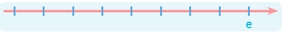

Prezintă colegilor, oral, în 3-4 enunțuri, părerea ta despre faptul că Florin alege să își rezolve problemele din viața reală într-o lume imaginară.
Imaginează-ți că ești personajul Florin. Continuă romanul, în cel puțin 80 de cuvinte, cu o întâmplare care să dovedească faptul că Ana și-a schimbat comportamentul.
Propune un alt titlu pentru textul citit. Motivează, oral, alegerea.
Realizează o bandă desenată în care să redai întâmplările la care a participat personajul preferat din textul citit.
Notează, pe o figură asemănătoare celei de mai jos, ordinea cronologică a întâmplărilor petrecute în textul narativ literar Florin scrie un roman de Mircea Cărtărescu.
Acțiunea are coordonate spațio-temporale reale sau imaginare, precise sau nedeterminate.
Lectură
12